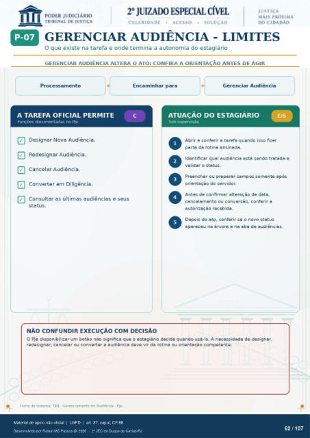

Transcrição automática em português, ainda não revisada. Confira grafia, prazos e termos jurídicos na imagem e no PDF antes de utilizar.
GERENCIAR AUDIÊNCIA - LIMITES
O que existe na tarefa e onde termina a autonomia do estagiário
GERENCIAR AUDIÊNCIA ALTERA O ATO: CONFIRA A ORIENTAÇÃO ANTES DE AGIR
Processamento
A TAREFA OFICIAL PERMITE
Funções documentadas no PJe Designar Nova Audiência.
Redesignar Audiência. Cancelar Audiência.
Converter em Diligência. Consultar as últimas audiências e seus
Encaminhar para Gerenciar Audiência
ATUAÇÃO DO ESTAGIÁRIO
Sob supervisão Abrir e conferir a tarefa quando isso fizer
parte da rotina ensinada. Identificar qual audiência está sendo tratada e
validar o status. Preencher ou preparar campos somente após
orientaçao do servidor. Antes de confirmar alteraçáo de data,
cancelamento ou conversáo, conferir a autorizaçào recebida.
Depois do ato, conferir se 0 novo status apareceu na árvore e na aba de audiências.
status.
NÃO CONFUNDIR EXECUÇÃO COM DECISÃO
O PJe disponibilizar um botão nao significa que o estagiário decide quando usá-lo. A necessidade de designar, redesignar, cancelar ou converter a audiência deve vir da rotina ou orientaçâo competente.
Fonte de sistema: TJRJ - Gerenciamento de Audiência - PJo.
Ver também o infográfico original (página 62)
